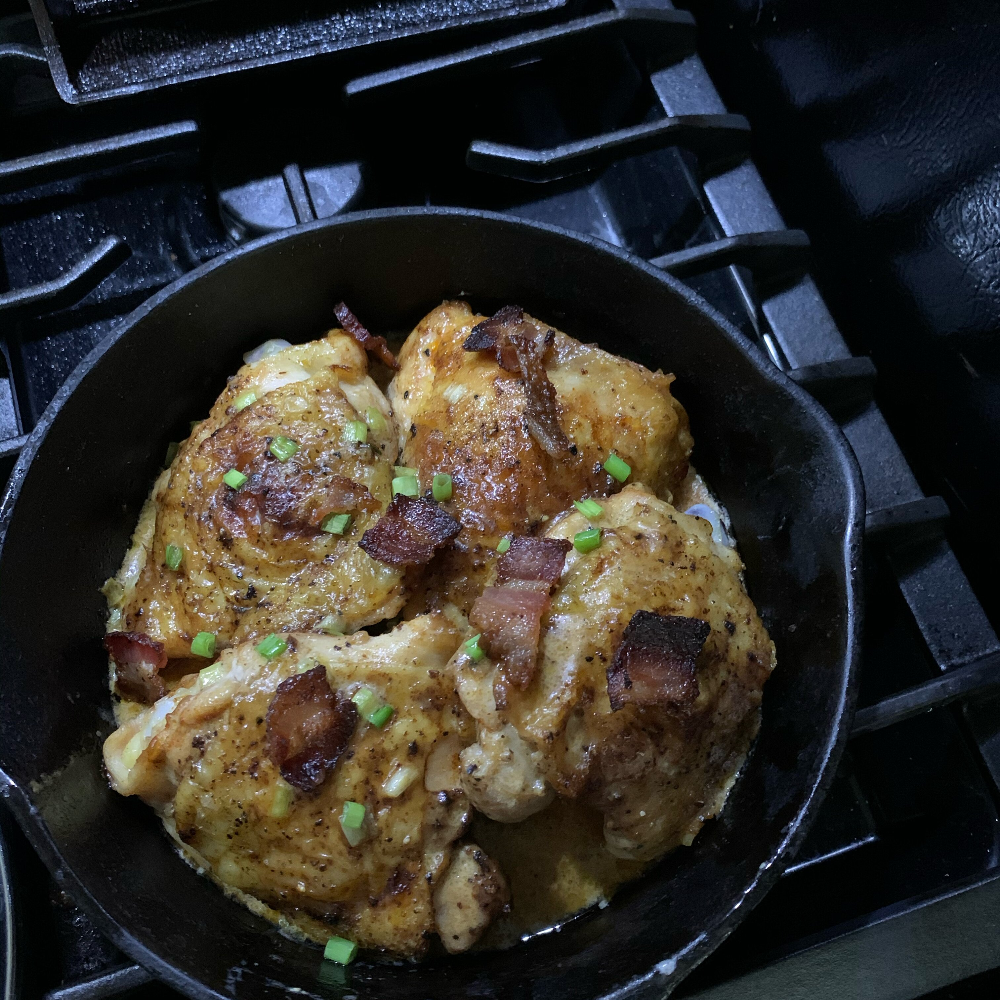

Jollof Rice

Description
Easy, One Pan Southern Smothered Chicken is a quick Southern recipe featuring seared and baked chicken thighs
drizzled in brown gravy. This healthy dish is made with onions and spices all in a cast iron skillet.
Topped with bacon, mushrooms, green onions, and a creamy sauce, these chicken thighs are sure to become a
favorite on your keto menu.
Ingredients
- 4 (8 ounce) skin-on, bone-in chicken thighs
- 1 teaspoon paprika
- salt and pepper to taste
- 4 slices bacon, cut into 1/2 inch pieces
- ⅓ cup low-sodium chicken broth
- 4 ounces sliced mushrooms
- ¼ cup heavy whipping cream
- 2 green onions, white and green parts separated and sliced
Steps
-
Preheat the oven to 400 degrees F (200 degrees C).
-
Season chicken thighs on all sides with paprika, salt, and pepper.
-
Cook bacon in a cast iron skillet or oven-safe pan over medium-high heat until browned, 4 to 5 minutes.
Remove from skillet and drain on a paper towel-lined plate. Drain and discard excess grease from skillet.
-
Return skillet to medium heat and cook chicken thighs, skin-side down, for 3 to 4 minutes. Flip chicken over
and place skillet in the preheated oven.
-
Bake until chicken thighs are no longer pink at the bone and juices run clear, about 30 minutes. An
instant-read thermometer inserted near the bone should read 165 degrees F (74 degrees C). Remove chicken to
a plate and cover with foil to keep warm. Remove all but 2 tablespoons drippings from skillet.
-
Return skillet to the stove over medium-high heat. Pour in chicken broth while whisking up brown bits from
the bottom of the skillet. Add mushrooms and cook until soft, about 3 to 4 minutes. Pour in heavy whipping
cream and whisk together until lightly simmering, then reduce heat to medium-low. Season with salt and
pepper, if necessary.
- Return chicken and any juices back into skillet; top with bacon and green onions. Serve immediately,
spooning sauce over the chicken.